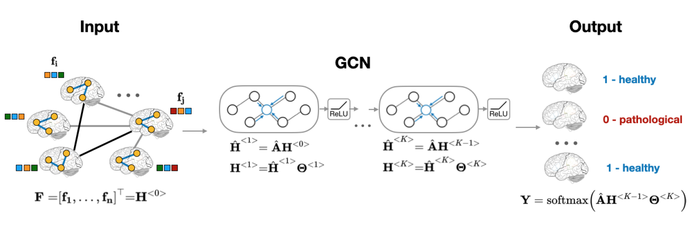

Download
Abstract
For the final project of the SoSe 2025 class on Convolutional Graph Neural Networks, I have developed and trained a population-based GNN to classify preprocessed fMRI scans from the ABIDE dataset into ASD or Healthy Control group. The model was trained on a subset of the ABIDE dataset, and its performance was evaluated in terms of AUC and F1 scores. The results were compared with a similar CNN-based model. The graph-based model achieved slightly better performance, highlighting the benefits of a graph-oriented approach when it comes to model architecture.
Figure : Model Architecture
